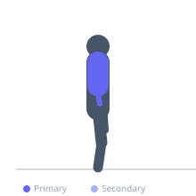
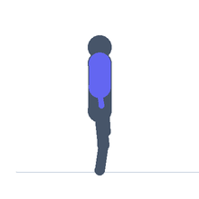

Exercise guide / Ring Dip
Ring Dip
A dip exercise performed on gymnastics rings rather than a fixed dipping bar. The unstable nature of the rings requires significant shoulder girdle stability and demands greater pectoralis, triceps, and anterior deltoid activation throughout the movement compared to bar dips, while also training the small stabilizing muscles of the shoulder.
Primary muscles
pectoralis major
triceps long head
triceps lateral head
anterior deltoid
Secondary muscles
pectoralis minor
triceps medial head
medial deltoid
Stabilizers
transverse abdominis
serratus anterior
Equipment
Pull-Up Bar (Freestanding Tower)
Optional
Dip Bars / Dip Station


Starting position
- Support your body above the rings with arms fully extended, rings turned out slightly, body upright.
Setup
- Set the rings at a height that allows full dip depth without touching the floor. Mount by jumping up to ring support position.
Steps
- Step 1: Lower your body by bending the elbows, allowing a slight forward torso lean.
- Step 2: Descend until the upper arms are parallel to the floor or the shoulders are level with the elbows.
- Step 3: Turn the rings outward at the bottom for stability and shoulder health.
- Step 4: Press through the palms to fully extend the elbows and return to the top position.
Coaching cues
- Turn the rings out at the bottom
- Squeeze the rings together as you press up
Breathing
- Inhale on the descent. Exhale on the press up.
Range of motion
- Descend until upper arms are parallel to the floor. Full elbow extension at the top.
Tempo
- 2-1-1-0
Common mistakes
- Failing to turn the rings outward at the bottom, increasing shoulder impingement risk
- Dipping too fast without controlling the rings
Safety
- Ensure you can perform 10 clean parallel bar dips before attempting ring dips
- Have a spotter or mat below when learning
Training
- strength: 3–8 reps
- hypertrophy: 8–15 reps
- strength: 3–5 sets
- hypertrophy: 3–4 sets
- Rest: {'strength': 180, 'hypertrophy': 90}